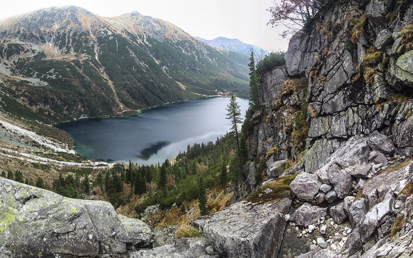
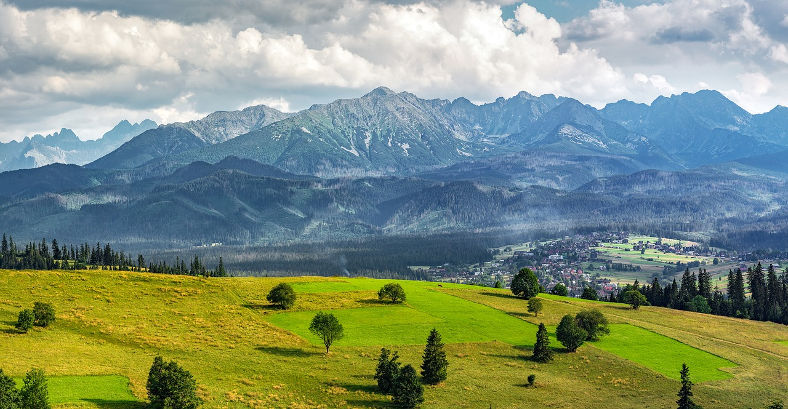

Морське Око — гірське озеро неймовірної краси, яке знаходиться у Польщі . А саме у горах Татрах. Насправді там багато цікавих місць та прозорих озер, але Морське Око — найбільше та найвідоміше. Мандрівники з усього рушають у подорож, аби поглянути у його бірюзову глибину та насолодитись унікальною природою. За один день можна зустріти декілька оленів, білочок та інших звірів, спостерігати за якими — одне задоволення, адже вони знаходяться не у клітках, а вдома.
Розповім про те, як дістатись до Морського Ока, де краще ночувати і як планувати маршрут аби з мінімальними витратами побачити цю красу.
Найближчий населений пункт, від якого регулярно їздять автобуси до заповідника Морське Око — це Закопане . Польське містечко із видом на Татри. До нього, у свою чергу, найзручніше дістатись із Кракова. Якщо казати про початок подорожі з України, то починати його краще зі Львова. До нього із легкістю можна дістатись автобусом чи потягом.
Львів — Закопане чи Львів — Краків?
Прямий автобус Львів — Закопане обійдеться вам у 20Є, в той час як автобус із пересадкою у Кракові може коштувати від 15Є, при цьому ви матимете можливість провести декілька годин у чудовому польському місті. Те ж саме стосується і зворотної дороги, під час якої у цьому місті можна зробити зупинку практично на день, щоб встигнути обдивитись усе що потрібно і посидіти у затишному закладі.
Закопане: де зупинитись біля Морське Око
Найбільш дешеві хостели ви знайдете у цьому містечку. У центрі ціни стартують від 10Є. Для прикладу, до послуг Target Hostel, що знаходиться неподалік від вокзалу, у цю мінімальну суму входить безкоштовний сніданок із тостів, джему, сирів, пластівців та молока тощо. Це непогана можливість зекономити на одному прийомі їжі. Хостел досить зручний, має достатню кількість душів, нове обладнання та меблі.
Підйом на Морське Око
Для того, аби дістатись із Закопаного до підйому на Морське Око, дійти до самого озера, влаштувати там пікнік на 2-3 години і спуститись назад — вам цілком вистачить одного дня. Але варто врахувати декілька важливих пунктів: вирушайте туди із самого ранку, щоб встигнути спуститись дотемна. А також не забувайте, що остання маршрутка відбуває о 21:00, так що варто вже о 20:00 максимум бути у точці, з якої ви зранку відправлялись.

Неодмінно візьміть із собою воду, ситний обід, який краще розділити на два прийоми, аби не перевантажувати шлунок. Також варто глянути прогноз погоди аби взяти всі потрібні речі: теплий одяг, дощовик, відповідне взуття.
Повернення додому
Шляхів для повернення насправді є декілька. Пропоную той, що дешевий і максимально швидкий — через Краків. Тоді ця подорож може втиснутись у міні-відпустку. Якщо маєте більше часу — можете розглянути варіант повернення в Україну через Словаччину, відвідавши затишне містечко із чудовою архітектурою — Кошице.
Аби дістатись до Кошице із Закопаного, потрібно прийти на автовокзал і взяти квиток до словацького містечка Попрад. Це вам коштуватиме близько 6Є. Із Попраду до Кошице можна дістатись автобусом або потягом, ще за 4-5Є. Також, 6Є коштуватиме вам дорога із Кошице в Ужгород. Тут варто скористатись нічним проїздом, аби не витрачатись на ще один хостел.
Отже, готовий план подорожі для прикладу: Львів — Краків — Закопане — Краків — Львів. У сумі поїздка зі Львова обійдеться у 56 євро. Непогано, як для закордонного відпочинку із підйомом у гори, чи не так?
Ви можете обрати інший варіант подорожі: Львів — Краків — Закопане — Попрад — Кошице — Ужгород. Це обійдеться також близько 57 євро. При цьому ви матимете змогу відвідати по дорозі ще одну країну.
Плануйте подорожі, вони можуть бути не тільки приємними, але й економними.